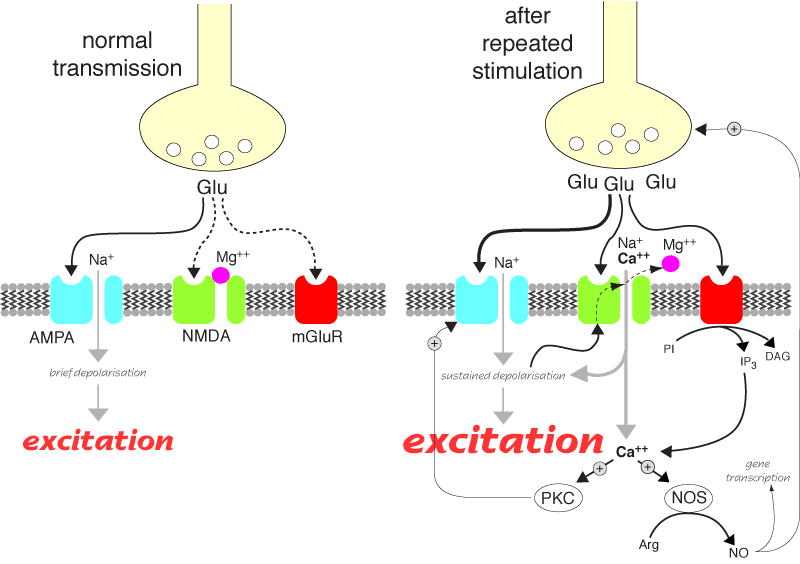

Glutamate (and aspartate) will excite virtually all central neurones. It acts at a variety of receptors, usually named after the experimental drug used to characterise them. Fast depolarisation of postsynaptic neurones is caused by activation of the ionotropic (Na+) AMPA receptor. (The kainate receptor is very similar and is thought to do the same thing, although its distribution in the brain is different.) The NMDA receptor is also a ligand gated ion channel (Na+ and Ca++) and is an important target of drug action (see below). Metabotropic glutamate receptors (mglu) (nine subtypes at the last count) are G protein coupled receptors which tend to modulate transmission both pre and post-synaptically. No useful drugs act specifically at metabotropic glutamate receptors at present but this is likely to change.
Glutamate is released from vesicles in a process that requires calcium. Zn++, and probably other things, are also released from the vesicles.
These are a means of amplifying excitatory signals. They are thought to be responsible for long term potentiation which is the physiological basis of memory. Possibly more important from a veterinary practice point of view, they cause wind up in the spinal cord (and probably the brain stem) which shows up as hypersensitivity to pain (see analgesia). They are probably also involved in the propagation of seizures in epilepsy.
They are composed of five proteins, usually one NR1 subunit and four NR2. There are several types of NR2 subunits; NMDA receptors containing NR2B subunits are thought to be important in pain and are being targetted for drug development. Having a variety of subunits to choose from when forming NMDA receptors means that many subtyes of receptors are possible, but the clinical relevance of this is not clear yet. The channel pore is normally blocked by Mg++ ions, but these are displaced on depolarisation, allowing Na++ and Ca++ through the pore. Ca++ sets off a series of reactions which can result in long term changes.
Many useful drugs exert their effects indirectly through NMDA receptors, ketamine directly blocks the channel. It would be undesirable in most circumstances to completely block (loss of memory) or open the channel (excitotoxicity), so most new drugs coming along are partial agonists.
In most forms of neuronal injury, particularly strokes in people, the mechanism of damage is cells leaking glutamate (from energy metabolism) which then acts at NMDA receptors and lets lots of calcium into the cell. This can kill the cell (excitotoxicty). A drug which could prevent this without side effects would be a huge earner, so there is a lot of effort going into research in this area.
NMDA receptors require glycine to bind to a specific site before the channel can open. In vivo, there is always enough glycine around to allow channel opening, but many potentially useful NMDA antagonist drugs bind to this glycine site. (nb, this is not the same as glycine gated Cl- channels, see below.)
NMDA receptors are ionotropic receptors related to GABAA receptors. Glutamate is the agonist, but glycine is also required for channel opening. Channel opening can be modulated by polyamines, and the channel can be blocked by magnesium and a number of drugs.

NMDA receptor activation after repeated stimulation. Glu = glutamate, PKC = protein kinase C, NOS = nitric oxide synthase, NO = nitric oxide.